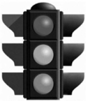

NEDEN KIRMIZI?
Tren, otomobil vb. trafiğinde yolun kapalı olduğu kırmızı ışıkla belirtilir. Bunun nedeni kırmızı rengin en kolay fark edilen renk olmasıdır. Acaba hangi nedenle kırmızı renk en kolay fark ediliyor?
Cevap:
Kırmızı rengin dalga boyu diğer renklerden uzundur. Göz merceğinde kırılan kırmızı ışın, retina üzerinde değil de arkasında hayal oluşacak tarzda mercekten en uzağa gider. Bu nedenle retina üzerindeki hayal hafifçe büyütülmüş olur ve kolayca fark edilir.

23 halkalık bir zinciriniz var. Bazı halkaları açarak zincir parçaları yaratmanız ve bu zincir parçalarındaki halka sayılarını uygun biçimde toplayarak 1’den 23’e kadar bütün sayıları elde etmeniz isteniyor. Bunun için kaç halka açmalısınız?
Cevap:
İki halka açarak (4. ve 11. halkalar) şu zincir parçalarını oluşturursunuz: 3-1-6-1-12. Bunlarla 1’den 23’e kadar bütün sayılar oluşturulabilir.